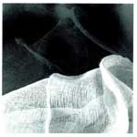
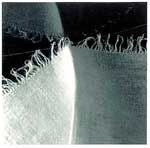
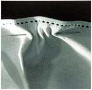
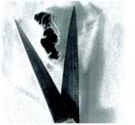

by Paulette Myers-Rich and Anna Reckin
|  |  | |
 |
 |  |
Paulette Myers-Rich
My introduction to Anna's poetry was through a mutual acquaintance asking if Anna could send me a manuscript for consideration for a fine press book. After an initial reading, I wrote to Anna expressing interest, but I couldn't do anything for a year as I was in production with a project. Four months passed and I read the work again. Anna's poetry resonated with me in such a visual way, that it inspired a set of photographs tied to each poem in the suite titled Broder. We met and agreed to join in a collaboration that would bring the photographs and poems together in a fine press artists book.
About the poems
The title Broder, with its proofreader's 'transpose' mark in the word to make 'Border' is a play on the French word to embroider, and indicates that this work usually occurs along the edges of a piece. The poems look at specific types of embroidery and lacework, challenging the idea that stitching is simply "surface ornament." The various kinds of openwork described—drawn-thread work, broderie anglaise, and faggoting (decorative bridging between strips of cloth) are all concerned with opening up the woven surface. Embroidery is seen as stereotypically female and docile, but the techniques described here—piercing, binding, etc.—speak more of violence than gentility. The underlying theme of the violence that enters women's lives through the domestic arena is central to the poems and the images.
About the photographs
These images are meant to be seen alongside their respective poems and are not intended to stand alone. However they are not merely illustrations of the poems, but responses to them. I set up the photographs from items in my collection of fine linens that I've saved from boxes of rags I get from St. Vincent de Paul's for cleaning up my press. Although these beautiful old pieces of needlework are worn, slightly stained or ripped (and thus seen as unsuitable to sell in the shop), I would never use them as rags so I keep them in a cupboard in my studio. The fact that these linens were cast off this way brings yet another equation for women's lives into the work.
The series of photographs begins with an image that is soft, reflective and gentle; an unformed piece of weaving, and moves through various stages to the final image of a slash and the open blades of a scissors alongside torn threads, evoking both female anatomy and the sharp-edged violence that is the underlying theme of the poetry suite. These abstract, beautiful images and poems draw the reader in and slowly reveal the dual nature of women's domestic lives.
Physical Description of the Book
I was also compelled by the formal qualities of Anna's poems. Her attention to the spacing and the quality of her lines attracted me as a letterpress printer who sets type by hand. We are both sensitive to the look of the page and how the visual informs the text. I designed the book in a square format which fit the poems and gave me a neutral space in which to work.
The book is an accordion format comprised of five images with five poems, alternating between image and text. The pages are individual sheets, 6 x 6" joined by strips of black and white reversible Unryu paper, with the black serving as a border between the pages. The book is bound on black linen cloth-covered boards, with a black flax slip sleeve over the book. The sleeve has a title label affixed to the front and the colophon on the back. A linen-covered clamshell box houses and protects this book.
The images are B/W duotones printed with archival inks. The text is handset type in Perpetua and letterpress printed.
Broder was the winner of the 2000 Minnesota Book Award in the Fine Press Category and was included in the "Recent Acquisitions" exhibit at the Walker Art Center, Minneapolis, and in "15 Years, Faculty and Friends" exhibit at the Minnesota Center for Book Arts at Open Book, Minneapolis.
Anna Reckin
I'm still amazed at what Paulette has made from this tiny sequence of poems. For me, one of the most exciting parts of our collaboration was visiting her studio, not long before I left Minneapolis to move to Buffalo. We'd spoken on the phone and exchanged letters (neither of us had home email at that point), and weren't sure that we'd manage to fit in a meeting, too. When I arrived at her studio, in a loft conversion in downtown Minneapolis, I expected to see sample papers, typefaces, and possible illustrations, maybe a layout or two. Instead, a beautiful dummy of the entire book was spread out on her workbench, very nearly complete.
She'd mentioned that she was thinking of including photographs, and I had felt a bit hesitant about "pretty-pretty" illustrations of dainty-looking embroidery. I couldn't have been further from the spirit of her work, the way its starkness contains softness and vulnerability, the sensuality of folds together with the hardness and softness of edges. I was, of course, extremely excited to see such a lovely and sensitive interpretation of my work, but also very moved by what it had sparked in her: a delicate and subtle moon-shape that emerges in the second image, and the unmistakable brutality of the last image (it was only when I saw that I remembered that I had had to do some writing on female circumcision at the time I was developing these poems—a another take on cutting and stitching...). That final image and its accompanying poem (the latter originally published in Prosodia) appeared in the dummy as the last-but-one piece. As soon as I saw it there, I realized that it needed to move to the end, and that the poems are in fact much more of a sequence than I had thought.
I don't think we had talked much about embroidery itself, and I had no idea when I sent my manuscript to Paulette that she had any interest in sewing and its materials. To me, this makes her work feel like a wonderfully direct response to the words on the page. But I've discovered since that embroidery, or work with textiles in general, often still seems to work as a kind of "hidden" language for women readers, despite its wide currency in feminist criticism. Women friends see Broder and are first, inevitably perhaps, struck by its violence, and then start to tell me about the church lace an aunt made, or crewel work done as a teenager, and I'm aware this is something they haven't talked about, or even thought about, for years. I'm interested in the possibility of writing in "all the languages I know," including a poem that is partly written in stenographer's shorthand, one now (gladly!) neglected part of my background. Another part of my experience is proof-reading and copy-editing for book publishers; the transposition mark in the title comes out of this. Paulette suggested that I provide her with some handwritten samples that she could use to make a plate. And so my handwriting ("the mark of the poet," as I think she described it!) enters into the printed book. Similarly, I had always thought of these poems as being in a square format, but I don't think I had mentioned this to Paulette (I took a copy of Barbara Guest's Quill, Solitary Apparition to her studio, to show as an example, only to find that she had already planned a very similar shape!) Page format and the alignments of the words—up and down the page as well as across—are very important to me. Paulette not only understood this, but was able to use her typographer's (and photographer's?) eye to arrive at much more satisfying and subtle arrangements than I could achieve on my Apple at home.
The original manuscript I sent to Paulette seemed to be mainly about green spaces and flowers; at some point "linens, spread" had crept into it, and this group of poems took off from there, and now, of course, have taken on a life of their own. That was a process that started to happen when Paulette told me that she was thinking of selecting this group to work with. Whereupon I sent her a revised set with the working title of "Surface Ornament" and (I think it was at this stage, but may be misremembering) provided some background notes on that theme.
I also noticed—to my pleasure!—that the treatment of this group seems very "American," even though the fuller manuscript seemed to be set in a deliberately idyllized England. (The italicized material in the introductory poem comes from Rose Macaulay's 1930s novel, They Were Defeated, about an imaginary young woman poet in 17th-century Cambridge.) Paulette mentioned the atmosphere of the lofts where she works, and their industrial history. I think I can see how this has influenced the treatment of the photos, which in some ways are very plain and to the point, and remind me a bit of black-and-white or sepia-toned photos in an old embroidery manual, perhaps rather like the big sewing encyclopedia I had as a child—passed on to me from my mother—where I would have first read about techniques like faggoting, and seen exactly how smocking was done. But even in a book like that, written for middle-class enthusiasts, and maybe for school libraries, there's also a sense of sewing as industry—not only dress-making and upholstery, but something like Mountmellick work, a fine kind of embroidery that was originally developed, I believe, to provide work for a particular community of women in Ireland. (That process, of course, is still going on in the Third World, some of it "fair-traded" to the Developed World, some not.) So when I saw Paulette's photos laid out in her loft space, I thought I detected a faint but entirely unsentimental period flavor, and was reminded of immigrant textile workers in the USA during the 19th and 20th centuries, and how one might make images of their work.
I hope it's clear from all this how immensely satisfying the collaboration was, and how the different media we chose to use (photography and book-making and putting together poems) seemed to communicate in a direct way beyond what we articulated to each other in notes and discussion. Particularly pleasurable to me was the way that Paulette didn't stop at interpreting, or even realizing the poems in book form, but used them as occasions for her own creative work; as she describes it, a gathering-up of "unconsidered trifles"—rags, tags, scraps of old histories—taking me back to my own obsessions with fragments, oddments, and what seems to have been cast off.
|
Bios:
Paulette Myers-Rich is a photographer and poet producing fine press artists books using traditional letterpress printing methods in combination with digital tools and technology. She can be reached at Traffic Street Press, 250 3rd Avenue North #300, Minneapolis, MN 55401 or at prich1@uswest.net.
Anna Reckin's poetry has appeared in Chain, Prosodia, Key Satch(ell), and The Texas Observer; Broder is her first book. Born in England, she has been living in the USA since 1995, and is currently studying in the Poetics Program at SUNY Buffalo.